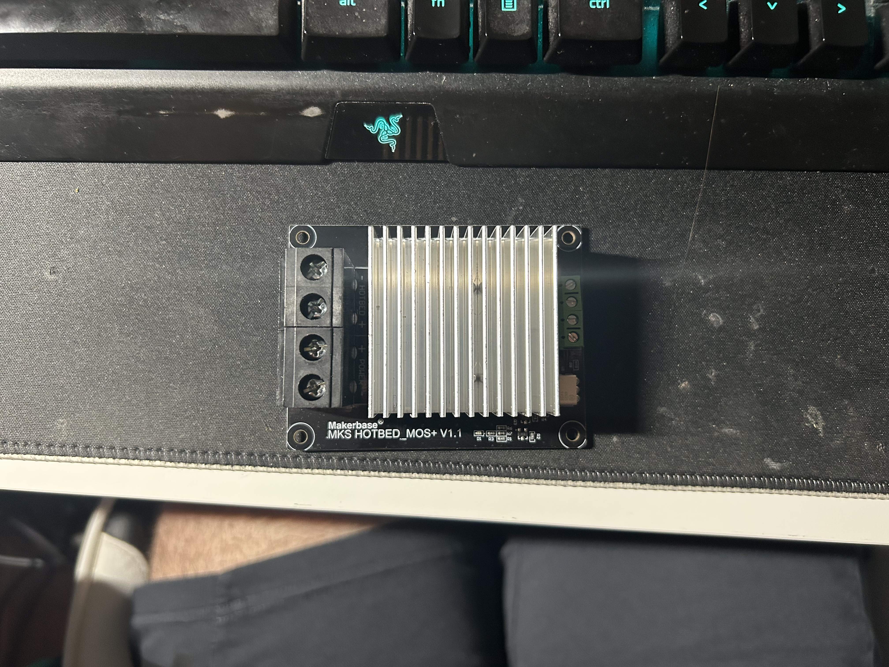
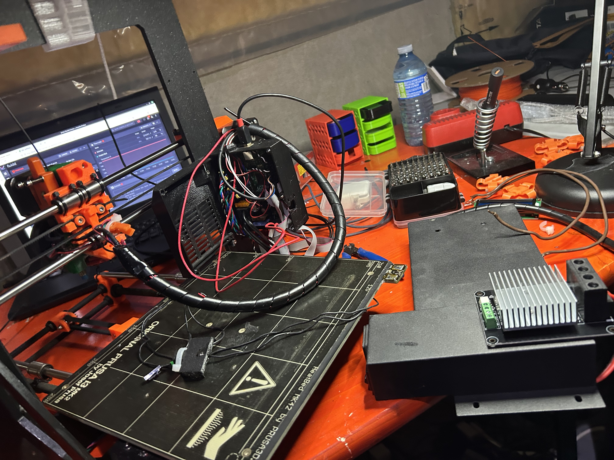
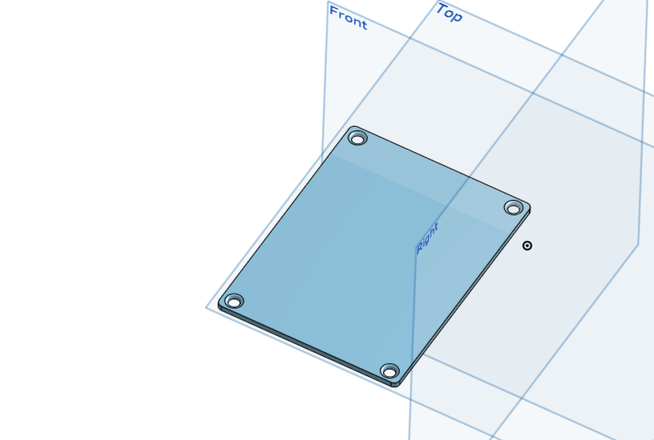

The first step in upgrading my outdated 12v Prusa MK2s to 24v was, obviously, sourcing the 24v PSU. I accomplished this through a sacrificial, donor ender 3 I found for free on facebook marketplace.
The next step was to source the bed and, crucially, a 24v output, 12v input MOSFET.
This MOSFET gets wired to the 12v control board, using the old 12v output, and switches on a 24v power source, providing the power needed for the bed.
Obviously, the temperature of the bed is calibrated through the board, so it can trigger on and off repeatedly to maintain a constant temperature.
After sourcing these parts, the next step was to test them all.
Following this, I had to design and print mounts for all of my new stuff, the PSU and the MOSFET, while I waited for a steel mount to come in directly from Prusa.
The designing of the mounts were, as per usual, easier said than done. My first step was to measure out the MOSFET and design a backing for it, which went smoothly. The issue soon became one of planning, where exactly should the mount for it go?
